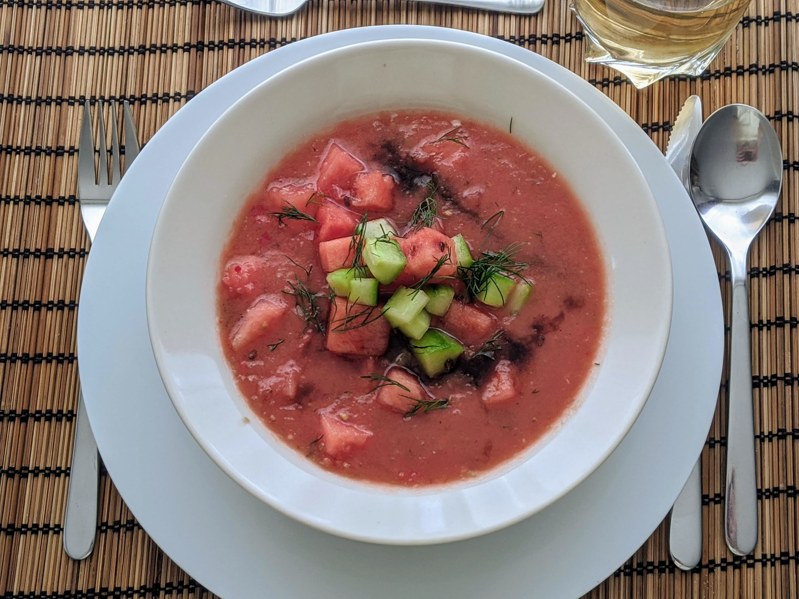

Gaspacho de pastèque

Pour 5 personnes :
- Une pastèque de 2.5kg environ
- Un ou deux piments
- Une grosse tomate, ou deux petites
- Un concombre
- Un oignon rouge pas trop gros
- Un demi-bouquet d'aneth
- Un peu de vinaigre balsamique
- Sel, poivre, huile d'olive
- Éplucher, épépiner grossièrement et couper en morceaux une grosse moitié de la pastèque, la moitié du concombre, le piment. Éplucher et émincer l'oignon, laver et couper la tomate en gros cubes. Laver et ciseler grossièrement la moitié de l'aneth. Tout passer au moulin à légumes avec la grille fine, ou bien simplement tout mixer.
- Ajouter un peu de vinaigre balsamique, de poivre et de sel. Goûter, rectifier l'assaisonnement. On peut ensuite directement passer à l'étape suivante, ou on peut laisser refroidir le tout au frigo quelques heures pour que ça soit bien frais.
- Éplucher, épépiner et couper le reste de la pastèque et du concombre en morceaux plus petits. Les ajouter sur les assiettes à la dernière minute, en saupoudrant d'aneth et d'un trait de vinaigre balsamique et d'huile d'olive.
Remarque : si on laisse refroidir une nuit entière, un seul piment suffit.
Retour à la liste des recettes